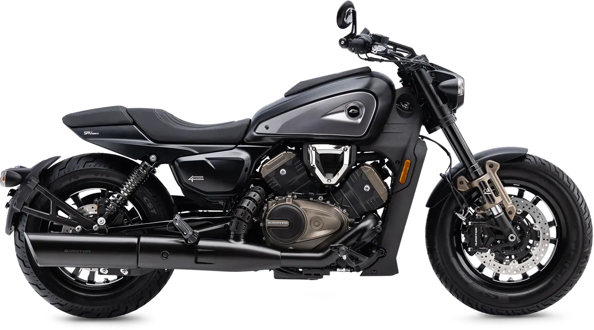
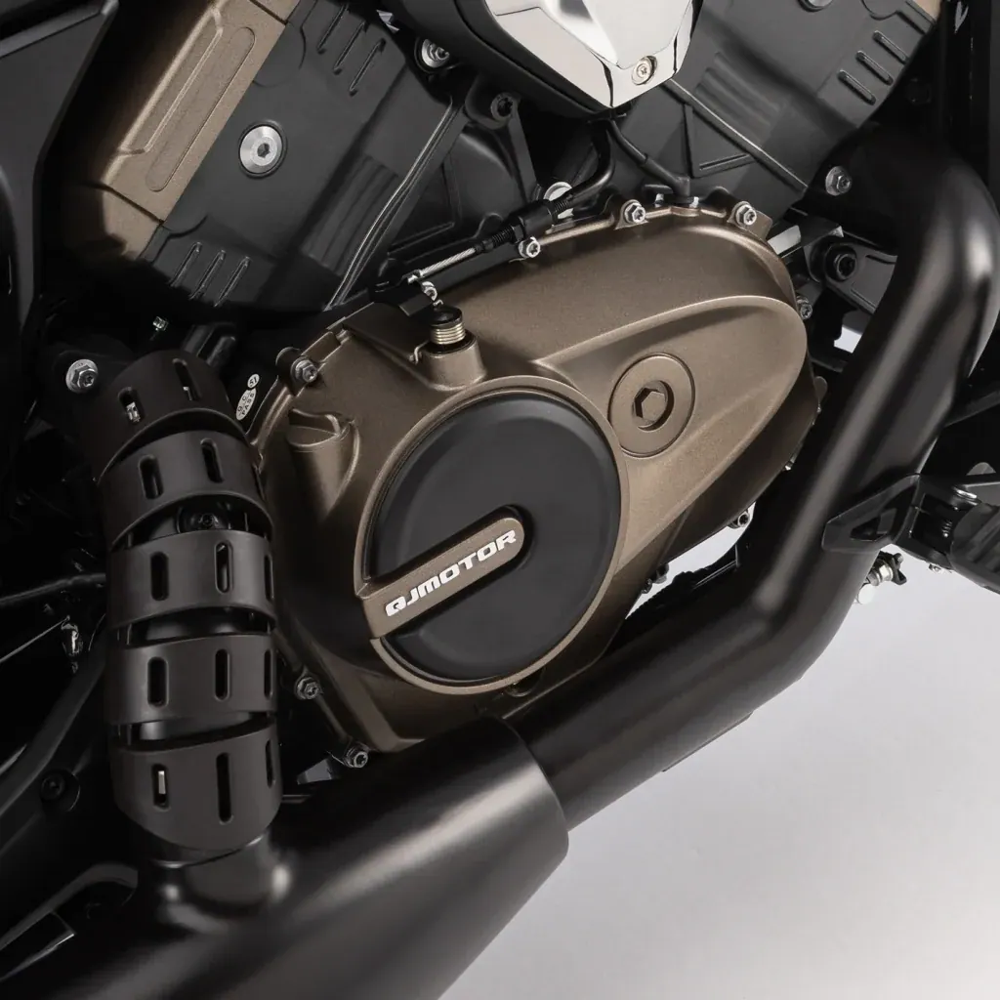
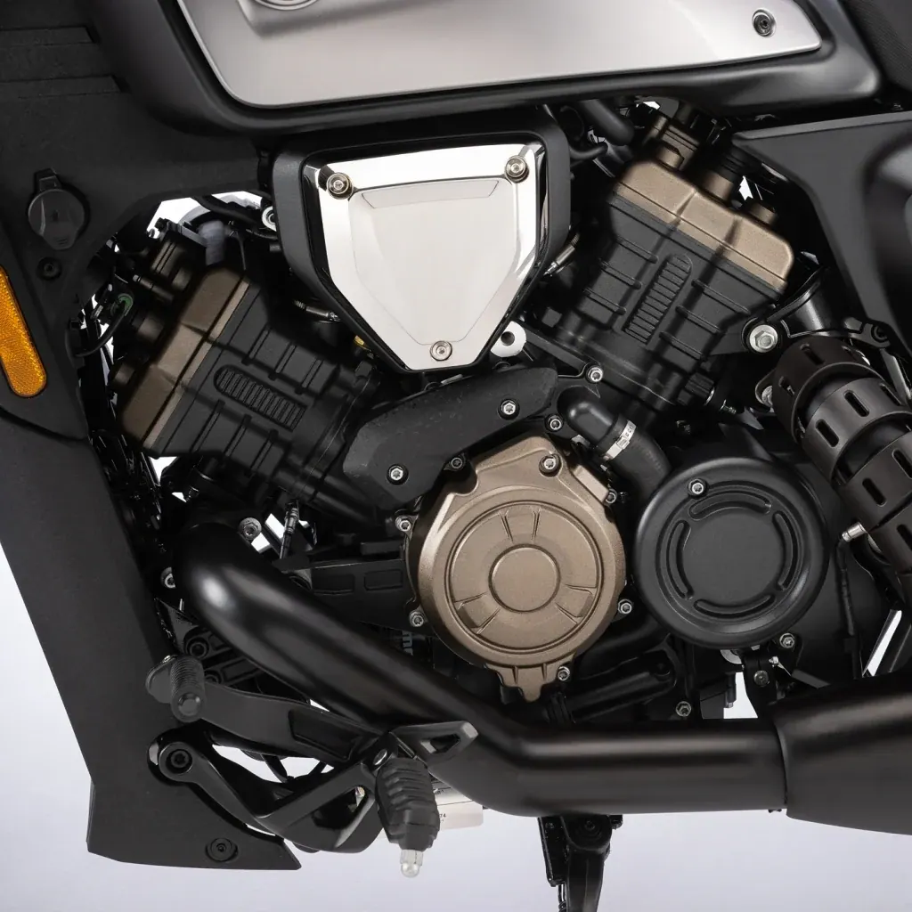
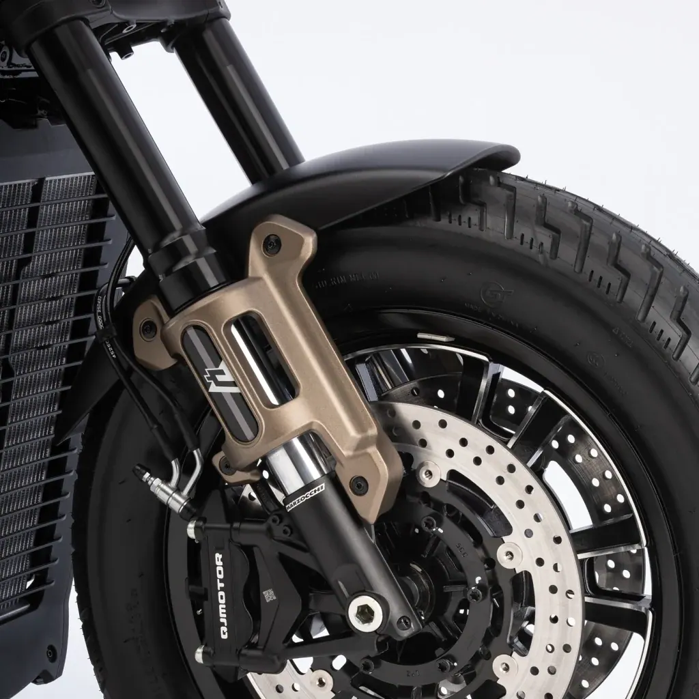
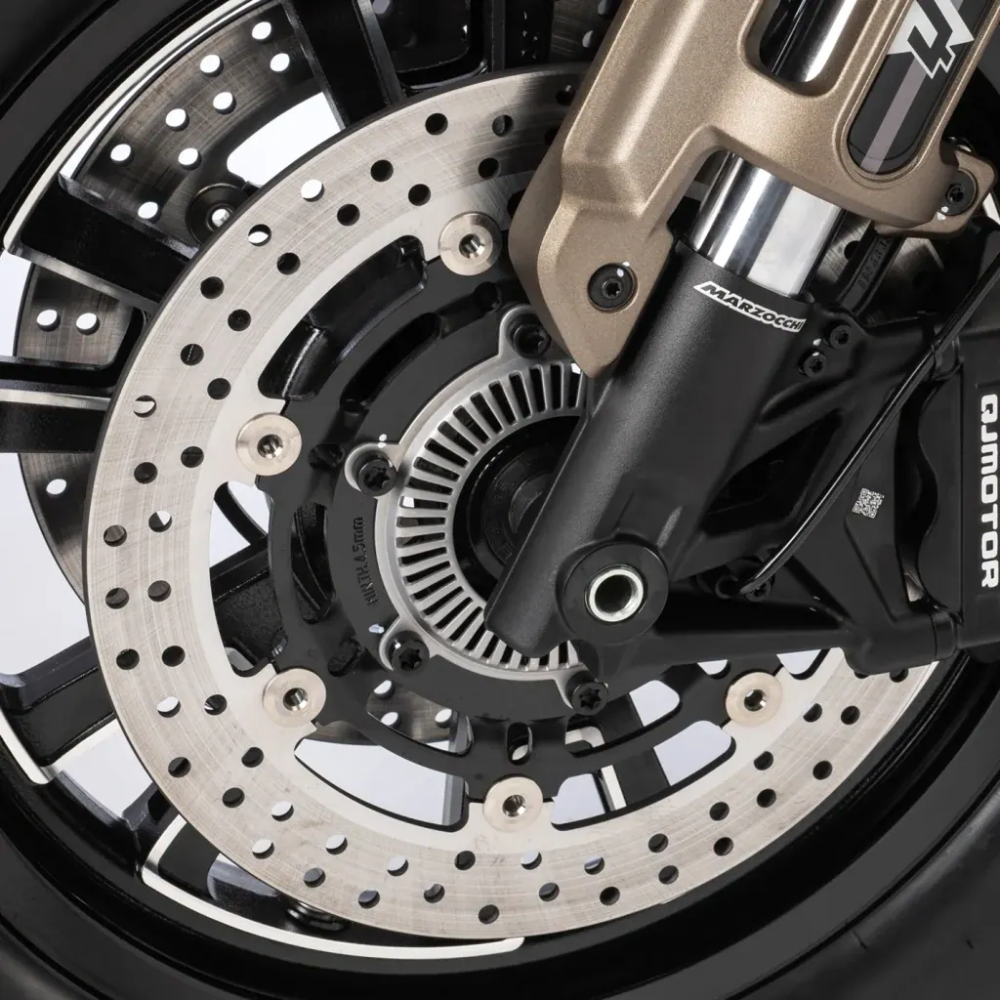

QJ Motor
SRV 550
A2 550 cc · 35 kW · Clásicas
Propuesta de OpsPilot para Expomoto Córdoba, en revisión. No es la web oficial: expomotocordoba.es
Inicio › Motos › QJ Motor › SRV 600v

QJ Motor
Motor 4 cilindros en v a 90º, dohc
Precio y financiación: te los damos al momento por teléfono (pendientes de publicar en la web).




El refinado motor V4 de 561 cc garantiza una entrega máxima de potencia de 51 kW (69,4 CV) a 10.500 rpm y 53 Nm de par a 8.500 rpm. Refrigeración líquida. Transmisión por correa y embrague antirrebote. Opción de limitación a 47 CV para el carnet A2.
Sin mantenimiento, ofrece una marcha silenciosa y progresiva con una vida útil superior a la cadena convencional. La elección natural para una custom que prioriza el placer de conducción.
Horquilla invertida de 41 mm regulable en rebote y extensión con 120 mm de recorrido delantero. Doble amortiguador trasero regulable en precarga.
ABS de doble canal con control independiente en ambas ruedas. Freno delantero de doble disco de 300 mm con pinza radial de cuatro pistones y freno trasero de disco de 260 mm con pinza de pistón simple.